Elizabeth M. Daly
IBM Research, Ireland

Misleading Impacts Resulting from AI Generated Explanations
Workshop @ IUI 2026
July 13, 2026
Explanations from AI systems can illuminate, yet they can misguide. This full-day MIRAGE workshop at IUI confronts the Explainability Pitfalls and Dark Patterns embedded in AI-generated explanations. Evidence now shows that explanations may inflate unwarranted trust, warp mental models, and obscure power asymmetries—even when designers intend no harm.
We distinguish these negative effects of XAI into Dark Patterns (DPs) where AI explanations were intentionally designed to achieve desirable states of AI systems e.g. placebo explanations to increase trust in AI systems versus Explainability Pitfalls (EPs) where unanticipated effects from AI explanations manifest even when there is no intention to manipulate users. The negative effects of explanations extend to propagation of errors across models (model risks), over-reliance on AI (human-interaction risks), false sense of security (systemic risks).
We convene an interdisciplinary group of researchers and practitioners to define, detect, and defuse these hazards. By shifting the focus from making explanations to making explanations safe, MIRAGE propels IUI toward an accountable, human-centered AI future.
| 14:00 | Welcome and introductions |
| 14:30 |
Highlight talks by accepted authors + panel Q&A
|
| 15:30 | Coffee break |
| 16:00 |
Highlight talks by accepted authors + panel Q&A
|
| 16:30 |
Activity to map the research area – breakout groups
|
| 17:15 | Next Steps |
| 17:30 | Close |
| October 10, 2025 | 1st call for papers |
| December 19, 2025 | Paper submission deadline |
| February 2, 2026 | Acceptance notification |
| February 6, 2026 | Registration deadline for authors |
| February 16, 2026 | Camera-ready CEUR papers to workshop chairs |
| July 13, 2026 | Workshop date at IUI 2026 |
Our workshop will bring together interdisciplinary researchers and practitioners in HCI and AI to gather the state-of-the-art in investigating and measuring Dark Patterns (DPs) and Explainability Pitfalls (EPs) as well as providing solutions for avoiding or mitigating DPs and EPs.
Topics covered in this workshop include (but are not exclusive to):
Submission types include position papers summarizing authors' existing research in the area and how it relates to the workshop theme, papers offering an industrial perspective or real-world approach to the workshop theme, papers that review the related literature and offer a new perspective, and papers that describe work-in-progress research projects.
We invite submissions to this workshop of 2-8 pages (without references). Prepare your submission using the latest ACM templates: Word Submission Template, or the ACM LaTeX template using \documentclass[manuscript,review]{acmart}. Please note that your submission does not need to be anonymized.
All submissions will be peer-reviewed through our program committee. Accepted submissions must be presented at the workshop; please note that the workshop is in-person only. Submission through Easychair: MIRAGE2026.
IBM Research, Ireland
Northeastern University, USA
Nokia Bell Labs, UK
University of Glasgow, United Kingdom
We are grateful to the following people for helping make the MIRAGE workshop a success: